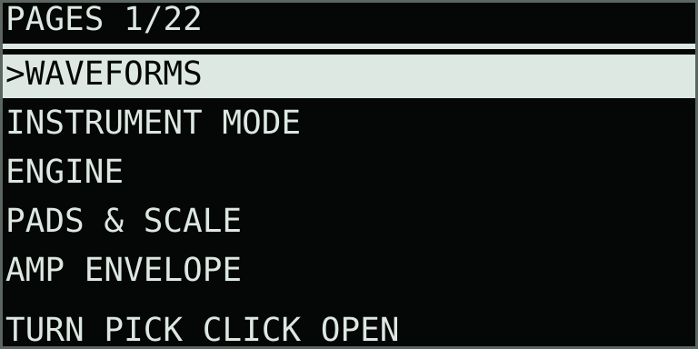

Screen guide
Interface tour
The waveform page is for playing and seeing motion. Parameter pages assign the eight encoders to the names and values shown on screen. Dedicated overview screens provide access to clips, chains, samples, the System Report, and shortcuts.
Instrument modes: Single, Split, Shared Dual, and Quad use different lane layouts and voice budgets. Compare the modes and choose a layout before following the controls below.
Move panel layout
- Display. Shows waveforms, playheads, stack markers, parameter pages, clips, chains, the browser, the System Report, and shortcuts.
- Encoders 1–8. Control the eight parameter cells currently shown. Their response is slowed by 50% for precise adjustment; one-shot actions still respond to the first turn. Reserved cells deliberately do nothing.
- Main wheel. Selects lanes or browser entries. Its click toggles performance recording from Main, confirms browser choices, opens FX Pages from either dual mode’s FX Sends page, and lifts or drops effects on FX Order.
- Track 1–4. Selects the lane used for capture and editing. In Split it also focuses A for lanes 1–2 or B for lanes 3–4. Shared Dual keeps focus unchanged. Quad focuses the lane’s A–D instrument. Shift+Track opens its source browser.
- 32 pads. Play up to eight voices in Single, four per half in either dual mode, or two per quadrant in Quad. Pressure moves each held voice's stack offset when Pressure is Offset.
- Step 1–16. Selects a performance clip in the current A–D bank and addresses entries in Clips and Chain views.
- Play. Stops or resumes performance-loop playback. Shift+Play cycles Main → Clip Overview → Chain → Main.
- Record. Starts or stops performance-data capture. Shift+Record records stereo audio into the selected lane; Delete+Record removes the newest overdub take.
- Loop. Holds or resumes stack scanning for the whole Single instrument or the focused part in a multi-instrument mode. Shift+Loop controls Glitch Buffer Lock. Quad has no stack scan; Loop is available for Glitch or an enabled Tape Inertia transport gesture.
- Back and Menu. Menu toggles the waveform and parameter pages; Shift+Menu opens System Report / Shortcuts. Back closes a secondary view or saves and exits from Main. The separate curved-arrow Undo key performs the one-level safety undo.
- Left / Right arrows. Select performance-clip bank A–D from the waveform and parameter pages.
- + / − keys (Up / Down). Transpose the pad grid by octave on the waveform page, move through parameter pages, set Chain repeats, or browse lists according to the current view.
- Delete. Delete+Step resets a clip or removes a Chain entry; Delete+Record removes the newest overdub take; Delete+pad clears a cue. Shift+Delete clears the selected audio lane.
- Shift. Accesses audio recording, lane-source browsing, System Report / Shortcuts, clip copy and move, Glitch Buffer Lock, and the shortcuts documented in Shortcut Reference.
Find the icon controls
The icon buttons to the right of the pad grid provide mode, focus, mute, and undo control:
| Control | Where to find it | Action |
|---|---|---|
| Copy | Overlapping squares, right of Delete and below Mute. | Toggle Single / last multi-instrument mode. Choose Split, Shared Dual, or Quad in Capture + Menu → Instrument Mode. Shift + Copy copies sound settings to the other side in dual modes, or the next A–D part in Quad; sources and the destination mute stay in place. |
| Capture | Four broken-corner brackets, directly right of the pads and above Loop. | Switch A/B focus in dual modes, or cycle A–D in Quad. Open FX Sends with Capture + Menu → FX SENDS; Shift + Capture conflicts with Schwung Skipback in 0.28.0. Capture + knob 8 adjusts Blend in dual modes or the focused part’s level in Quad. |
| Undo | Curved reverse arrow, below Delete and directly left of Shift. | Restore the most recent destructive clip or sample action. It lights when an undo is available. Stop audio or performance recording first. |
| Mute | M-marked button, right of Loop and above Copy. | Mute or unmute the focused part in a multi-instrument mode. Its playheads keep moving; Part-mode sample preview follows its mute; Direct preview is independent. |
Waveform page
THRU LANES A01 V3 means the Lanes engine is active, clip A01 is selected, and three voices are held. PLAY 13.6b SYNC 1.00x reports a running Beat Sync clip, its length, and playback rate.| Display element | Meaning |
|---|---|
| Header | Single shows the engine, clip address, held voices, and recording state. Dual modes identify both engines, voice counts, and Blend. Quad shows four counts and the focused engine. MUT replaces a muted part’s engine abbreviation. |
| Part activity bars | The thin bars under part letters show post-insert, post-level audio activity; dual-mode bars also follow Blend. Shared effect tails and browser preview are excluded. Use A/B or Quad Mix Status for larger meters and reasons for silence. |
| Rows 1–4 | The four stereo lane waveforms. The thin mark at far left selects the recording/loading/editing destination. In Split, black lane numbers on white backgrounds identify the focused pair independently of that destination. Shared Dual uses plain lane numbers and marks focus on the A/B header letter. Quad highlights the focused part’s one lane and header letter. |
| Small lane bar | The lane’s contribution to the displayed voice. Cutups and all multi-instrument modes combine sounding voices and outgoing readers, including release tails. |
| Vertical lines | Independent source playheads. Single usually hides them on note-off; Cutups and all multi-instrument modes retain them through release. Solid lines are primary readers; dashed lines show outgoing or secondary readers. In Split each line spans only its own two lanes. Shared Dual spans all four rows, with top caps for A and bottom caps for B. Quad confines each reader to its own lane row. |
| Hollow markers | Each voice's lane-stack position. A marker between rows means adjacent lanes are being crossfaded. In Cutups, markers sit on the discrete lanes actually being read. |
| Position / Field view | Single enlarges the active Position/Field window across all four waveform lanes. Split gives each instrument its own window; inverted lane numbers show editing focus. Shared Dual follows the focused instrument’s POS/FLD across all four rows, even during playback; readers outside that window are hidden. Playheads use the same zoom as their waveforms. |
| Short lane ticks | Detected transient divisions on the selected lane. |
| Bottom progress line | Position inside the current performance-data loop. |
| Footer | Clip transport, source ownership, waveform scanning, load errors, or the most recent action. |
Read the waveform zoom
Turn waveform knob 1, POS, to move the readable source window; turn knob 2, FLD, to change its width. At FLD 1.00 the whole sample is visible. A smaller Field fills the display with that region, replacing boundary ticks with a closer view.
Single uses one window across all four rows. Split gives A and B independent windows across their own pair. Capture changes the highlighted lane numbers without clearing the waveforms or moving either window. Shared Dual uses all four rows for both sides and one window controlled by the focused instrument’s POS/FLD. The view responds while notes or data loops play, without widening to fit the other side’s readers. Capture follows the newly focused instrument’s window; an inverted A/B header letter identifies editing focus. Small cursor caps at the top identify A, and caps at the bottom identify B. See Shared Dual.
In Single and Split, sounding voices, release tails, and recorded gestures can widen the view until their readers finish. With no notes sounding it follows the controls. Shared Dual instead follows the focused part’s editable POS/FLD; Quad follows each row’s part controls, even while notes or recorded data play. Readers outside those windows are hidden while their audio continues. Zoom changes the display scale; sample and cue positions keep their source coordinates. Very narrow Fields enlarge the existing overview, so fine waveform detail is limited.
Waveform encoder layout
The waveform page keeps Position, Field, Speed, smoothing, and level in consistent positions. The lane and mode controls adapt to the engine, and both dual modes use knob 8 for Blend.
| Knob | Display | What it controls |
|---|---|---|
| 1 | POS | Position within the source. |
| 2 | FLD | Width of the readable source field. |
| 3 | SPD | Source transport speed. |
| 4 | STAK / LANE | Manual lane or moving path’s starting offset. Cutups uses a discrete starting lane. Reserved in Quad. |
| 5 | RATE / ADV | Stack-scan cycles per second. Cutups uses cuts per lane, or Hold. Reserved in Quad. |
| 6 | JOIN | Seam and transition smoothing. |
| 7 | MODE / PLAY / ORDR | The engine’s primary mode; PLAY for Sample/Slices, ORDR for Wavesets. |
| 8 | LEVL / BLND | Single or focused Quad part level; A/B crossfade in either dual mode. Dual-mode part levels remain on Engine-page knob 8. |
Glitch therefore uses RATE for the lane-stack scan beneath its history buffer and JOIN for that source's seams. Sample uses JOIN to crossfade its Loop boundary. Glitch's Buffer and Override controls remain on Glitch Clock. Cutups replaces STAK/RATE with LANE/ADV in the same knob positions. Lane selects a physical starting source; Advance selects Hold or 1/2/3/4/8/16 cuts per lane. See Cutups Lane and Advance. Sample and Slices retain the shared Scan Rate value for the next engine that uses it.
Live control safety: continuous controls glide to their new values, event controls are adopted by the next grain, cut, or cycle, and changes that replace a reader use a short transition. Wavesets waits for a rendered zero crossing or low-level point and overlap-adds the old and new readers. Bits, Rate reduction, and Glitch can still create deliberate digital edges. For clean playback, use BITS 0.00 and RATE 1. If an unexpected click occurs, check both RENDER MISSES and WORK MISSES in the System Report. Zero counts help narrow the cause, but do not rule out a source discontinuity or an interruption elsewhere in the device.
Parameter pages
Jump directly to a page
Hold Capture and press Menu to open Pages. Turn the main encoder or use Up/Down to select, then click to open. Back or Menu cancels and returns to the previous view. Releasing Capture after this shortcut keeps the current editing focus.
The list follows the selected engine and mode. It includes Waveforms, Instrument Mode, every available parameter page, the selected lane’s sample browser, and Mix Status in every multi-instrument mode. Each part remembers its own parameter page. Ordinary Up/Down page navigation remains available.

> appears before the page title.Choose Motion, Lanes, Grains, Cutups, Sample, Slices, Glitch, Weave, or Wavesets.
Center the readable source field.
Set the width around Position.
Set source transport speed.
Set the manual lane or a moving path's starting offset.
Set stack cycles per second.
Smooth seams and transitions.
Set final playback gain.
Use Up/Down while parameters are open to move through pages. Each parameter has one location: shared controls stay on the same shared page, while engine-only controls appear on separate contextual pages. The title fraction is current page / total pages, so its denominator changes with the selected engine. In Single, Mix / Rec, Effects, Stereo / Rotary, Tape, Reverb, FX Order, Sample Edit, Performance Loop, Overdub Takes, and Chain follow the contextual pages. Dual modes add FX Sends and Dual Setup; Quad has its own sends and Quad Setup, with lane-scan pages omitted. Multi-instrument layouts separate private inserts from shared returns; see the page order by mode.

Reserved positions: an unlabelled hollow box means that encoder has no assignment on this page. Turning it has no effect.
Stack Start versus Scan Rate: Stack Start is the exact crossfade position only when Path is Manual. On moving paths it seeds each new voice's phase; Scan Rate then advances from there. Press Loop to freeze every voice of the Single instrument, or the focused dual-mode part, at its exact audible blend—even between lanes. A released pad returns to that same blend if pressed again while Hold remains active. Press Loop again to clear those retained positions and resume. Performance recording stores these Hold/Run changes and the exact positions of held voices. Tape INRT can add a wet-path mechanical stop/start to the same gesture. In Glitch, Shift + Loop instead freezes the recent repeat histories while Stack Path can continue.
Secondary screens


View navigation
| Gesture | From | Result |
|---|---|---|
| Capture + Menu | Most views | Open the contextual Pages picker; main click opens the selected entry. |
| Delete + Play | Any view | Panic: stop performance playback and release notes, latches, Rolls, and preview with short fades. |
| Menu | Main or Parameters | Toggle waveform and parameter pages. |
| Shift + Menu | Most views | Open or close System Report / Shortcuts. Left/Right, Up/Down, or the main encoder changes its page. |
| Shift + Play | Main / Clips / Chain | Cycle Main → Clips → Chain → Main. |
| Shift + Track 1–4 | Main or Parameters | Open Move Samples and Thru Recordings for that lane. |
| Back | Secondary view | Return toward the waveform page. From Main, save and exit. |
LED language
In Single’s named Keys scales, playable pads are dark neutral grey and tonic pads are full white. Multi-instrument modes use their zone colors and brighter roots; see pad colors by mode. The strong brightness contrast makes tonics easy to read while keeping the scale map separate from the eight voice-slot colors: red, orange, yellow, green, azure, blue-violet, purple, and magenta. The complete recalled scale map appears when takeover opens. A momentary pad turns off after release. A Shift+pad latch remains lit until toggle-off or its Hold Off timer expires; after an octave, Root, or Scale change, its color dims when the stored pitch no longer matches that pad and brightens again when the original mapping returns. Step keys use this clip language:
- White: occupied clip.
- Orange: selected clip, stopped.
- Green: selected clip, playing.
- Red: performance recording.
- Blue-violet: queued clip.
The white icon keys use brightness to show availability. Menu, Back, Shift, Delete, Capture, and Copy are lit from startup. Menu brightens in parameter/menu/help views; Back brightens in secondary views. Undo lights when a one-level safety undo is available and recording is stopped. Shift and Delete brighten while held. Arrow keys light where they navigate. Copy is bright in multi-instrument modes and goes dark while recording blocks a mode change. Capture stays available in Single for Capture + Menu; in Split, bright Capture identifies B focus. Mute lights only in the dual modes and brightens when the focused part is muted. Unassigned icon buttons stay dark.
The Play key turns green while the performance loop runs. The Loop key is bright white for Glitch Buffer Lock or a live Stack Hold, medium white for a Stack Hold recalled from the playing clip, and dim white while both stack scan and Glitch history are live. Record is red for data capture and orange for audio-lane capture.